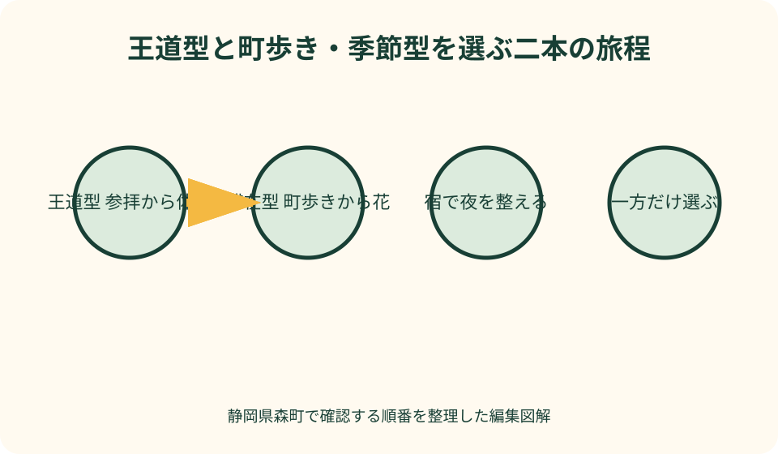
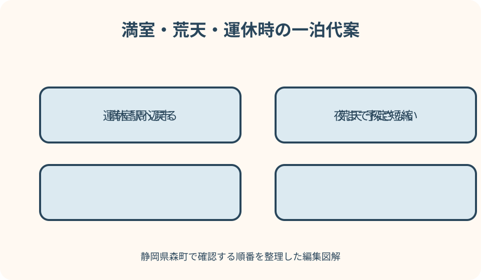

森町観光・宿泊｜最終確認 2026-08-10
静岡県森町の1泊2日観光モデルコース｜宿と翌朝の移動から組み立てる
静岡県森町の1泊2日は、観光地を二倍回る旅ではありません。日没前に宿へ入り、夕食と入浴を済ませ、翌朝の交通へ無理なく接続できることが一泊の価値です。基本は、1日目を小國神社とことまち横丁、2日目をアクティ森にする王道型です。静かな滞在や移住下見なら、遠州森駅からの町歩きと、その年に見頃を迎える花を組み合わせる型を選びます。宿と体験の予約が取れたことを確認してから、立ち寄り先を足します。帰宅翌日に疲れを持ち越さないよう、二日目の終了にも十分な余白を残してください。

一泊する理由を翌朝の主目的から決める
一泊の出発点は、二日目の朝にどこへ行きたいかです。アクティ森の予約、花の観賞、移住下見など、朝から動く価値がある目的を一つ決めます。
宿は一日目の最後に偶然見つける場所ではありません。空室、人数、到着、食事、入浴、寝具、門限、駐車、翌朝の出発を確認し、予約確定を保存します。
王道型と町歩き・季節型を同じ二日間へ詰めません。選ばなかった型は再訪理由として残し、二日目の帰宅時間と運転者の休憩を守ります。
本記事は宿泊や体験をした筆者の感想ではありません。2026年8月10日に確認した森町、観光協会、施設の一次情報から、予約前の判断を整理しています。
王道型の1日目は参拝と横丁に集中する
初日は小國神社を主目的にします。神社公式の参拝、境内施設、アクセスを確認し、祈祷や御朱印を希望する場合は受付条件を通常参拝と分けて調べます。
ことまち横丁は参拝前後の食事、甘味、茶、買い物に使います。店舗、商品、営業は当事者公式で確認し、写真にある品の在庫を旅行日の約束にしません。
参拝を先にするか食事を先にするかは、到着と同行者の空腹で変えます。宿の到着期限から逆算し、待ち時間が長ければ宮川散策や追加注文を外します。
紅葉や祭事の繁忙期は、駐車と退出に余白を取ります。満車時に周辺の細道を探さず、現地誘導へ従うか、参拝内容を短くして宿へ向かいます。
宿へ入る前に夕食と朝食を確定する
夕食付きの宿は、開始、到着遅れ、子ども、アレルギー、飲み物を予約時に確認します。食事付きという名称から品数や個別対応を推測しません。
素泊まり、コテージ、キャンプなら、食材や弁当を町なかで確保してから山間部へ入ります。夜に近隣飲食店が開いている前提で到着しません。
朝食は宿の提供、自炊、持参、翌朝の営業確認済み店舗のどれかへ決めます。二日目の予約時刻が早い場合は、調理と片付けの負担が少ない方法を選びます。
冷蔵品、生菓子、土産を初日に買うなら、宿の冷蔵設備と翌日の保冷を確認します。客室冷蔵庫の大きさや冷凍機能が十分とは限りません。
町内宿・コテージ・キャンプ・周辺市を分ける
町内宿は運営者ごとに食事と設備が異なり、コテージは自炊を伴う場合があり、キャンプは装備と天候判断が必要です。周辺市ホテルは森町外から翌朝戻ります。
観光協会の宿泊一覧は候補探しの入口です。掲載が現在の空室や営業を保証するとは考えず、予約先へ宿泊日、人数、食事、風呂、門限を直接確認します。
キャンプ経験や装備がない人が、宿満室を理由にテント泊へ切り替えるのは適切ではありません。袋井、掛川など周辺市の宿を公式予約先で探します。
公共交通利用なら、宿から翌朝の駅・停留所までの移動を確認します。夜間や早朝にタクシーが必ず待機しているとは考えず、必要なら事前に手配可否を聞きます。
宿で確認するのは部屋より夜の生活条件
予約時は、客室、寝具、冷暖房だけでなく、風呂、トイレ、タオル、館内の段差、夜間の出入りを聞きます。乳幼児や高齢者がいることも伝えます。
コテージでは調理器具、食器、調味料、洗剤、ごみ、鍵の受け渡しを一項目ずつ確認します。キッチン付きが食材以外すべて備わる意味ではありません。
キャンプでは区画、テント、寝具、電源、照明、炊事、火気、入浴、雨、増水、車の位置を確認します。施設判断で中止になる場合の連絡方法も聞きます。
夜は観光を続けず、翌日の衣服、雨具、予約票、交通情報を整えます。山間道路や暗い町なかへ食事探しに出る必要がない準備を優先します。
王道型の2日目はアクティ森の一体験を軸にする
二日目はアクティ森で取り組む体験を一つ選びます。森町公式の現行案内と施設公式で、営業、休館、年齢、予約、料金、受付、持ち物を確かめます。
陶芸などの創作、屋外活動、食事、買い物をすべて行う必要はありません。午前の予約一件を守り、昼食後の予定は天候と体力で決めます。
作品は後日受け取りや発送になる場合があります。当日持ち帰れると断定せず、完成までの流れ、連絡、送料、保管期限を申し込み先へ尋ねます。
体験の終了見込みは帰路を考える材料で、保証時刻ではありません。予定より長引けば買い物を短くし、高速道路、列車、バスへ余裕を持って向かいます。

町歩き・季節型は駅と花を一日ずつ分ける
静かな滞在を選ぶなら、初日に遠州森駅から町なかを歩き、二日目にその年の花を一か所訪ねます。花を複数地点で追わず、移動条件の合う一つを選びます。
町歩きは観光協会の散歩案内から寺社、町並み、茶、菓子、食事など一テーマを選びます。店や施設の営業を確認し、閉まっていれば外観見学の可否にも配慮します。
花は春の桜、初夏の花菖蒲やあじさい、秋の紅葉など季節で場所が変わります。森町公式の当年情報で開花、公開、催し、駐車を確認します。
花の見頃が外れた時は、別の遠い花へ追いかけず、町歩き、参拝、食事の一つへ戻します。自然条件を旅行の失敗として扱わない代案を用意します。
車の二日間は駐車と運転者の休憩を記録する
車では、各施設の公式住所、駐車案内、道路規制を前夜にも確認します。地図アプリが示す細い山道を時間短縮の経路として採用しません。
宿の駐車は、台数、車高、夜間出入り、チェックアウト後の留置可否を確認します。宿泊したから翌日も自由に置けるとは考えません。
初日の買い物を車内へ残す場合、食品、精密品、貴重品を高温や盗難へさらさない対策が必要です。宿へ持ち込める荷物量を先に決めます。
二日目の帰路は、体験後すぐ長距離運転へ入らず、飲食と休憩を組み込みます。運転者が飲酒せず、同行者も無理な追加訪問を求めないことを共有します。
車なしの一泊は荷物と往復接続から逆算する
車なしは森町公式の公共交通ページから天浜線、路線バス、町営バス、タクシーの運行主体へ進みます。二日分の往復と運行日を一枚にまとめます。
宿最寄りまで公共交通が来るか、停留所から歩ける道か、暗くなる前に着けるかを確認します。時刻表上の接続だけで夜道の安全を判断しません。
大きな荷物は、宿の預かり、駅や周辺の保管設備、持ったまま歩く範囲を確認します。預かりを予約済みサービスのように期待しません。
運休や接続失敗では、タクシーの営業と手配可否を確認します。利用できなければ、遠い施設を諦めて駅周辺へ戻るか、周辺市で宿泊を続ける判断をします。
雨天は二日とも同じ代案へ詰め込まない
初日が雨なら、小國神社では川辺を外し、参拝と横丁を短くします。強雨、風、道路規制があれば、宿へ直接入り、訪問日を改める方法もあります。
二日目のアクティ森は、屋外体験の実施判断を施設へ確認します。屋内体験へ変更できるとは限らず、満員なら食事と買い物へ短縮します。
町歩き型は、濡れた路面、傘で狭くなる歩道、店休を考え、駅に近い範囲だけにします。花の斜面や水辺は現地の立入表示を優先します。
二日とも荒天なら、宿泊した分を取り戻そうと予定を増やしません。宿の取消条件と交通の運行を確認し、早めの帰宅または安全な延泊を相談します。
二日目の出発は精算・荷物・鍵を先に終える
チェックアウト時刻は観光開始の目安ではなく、精算、荷造り、清掃、鍵の返却を完了する期限です。朝食後に荷物を詰め始めず、前夜のうちに不要品をまとめ、施設ごとの退室手順を読みます。
コテージやキャンプでは、ごみの分別、食器洗浄、寝具、火気、区画の原状回復を確認します。一般ホテルと同じ退室方法だと思わず、受付で不明点を聞いてから夜を過ごします。
宿へ荷物を預けて観光する案は、預かり時間、引取り方法、貴重品、冷蔵品、帰路との位置関係を確認できた時だけ使います。預けた荷物を取りに戻るため、列車や体験へ遅れる旅程は避けます。
車へ積む時は、作品や土産を動かない場所へ置き、雨具と飲料はすぐ取れる位置に残します。公共交通では一人で持てる量に抑え、階段や乗換えで子どもの手を空けられる荷物構成にします。
満室・休業・売り切れを旅程崩壊にしない
町内が満室なら、袋井、掛川など周辺市のホテルを、翌朝の駅やICから選びます。安い順だけで選ばず、夕食、駐車、最初の便を含めます。
希望店が休業なら、別の営業確認済み店、宿の食事、事前購入の順で切り替えます。夜に車で飲食店を探し続ける状態を作りません。
横丁の商品や季節の農産物が売り切れても、似た品が他店に必ずあるとは限りません。保存の利く土産を選ぶか、購入を次回へ残します。
体験枠が取れなければ、予約不要と確認できた範囲だけ利用し、次の予約方法を聞きます。一泊したことを理由に非公式な受付を求めません。

移住下見では観光と生活の記録を分ける
移住下見を兼ねる人は、森町公式の移住情報で相談窓口、地域、住まいの情報へ進みます。観光施設の印象だけで居住地を決めません。
初日の町なかと二日目の山間部で、道路、買い物、通信、気温、音、公共交通を別々に記録します。昼の便利さを夜や平日の条件へ置き換えません。
宿の快適さも一般住宅の設備とは異なります。水道、浄化槽、農地、境界、災害、通勤、通学、医療は、物件と行政の資料で個別に確認します。
一泊で結論を出さず、季節と曜日を変えて再訪します。観光の満足度と生活課題を別の欄へ書くと、地域への好意を保ちながら現実を見られます。
日没前に宿への最後の区間を走り終える
町なかから山間部の宿やキャンプ地へ向かう場合、日没後は路面、枝、動物、入口看板を確認しにくくなります。観光地を出る時刻を日没と受付終了から逆算します。
宿名の代表住所だけをナビへ入れると、管理棟ではない地点や細い道へ案内されることがあります。予約確認書でチェックイン場所、推奨経路、最終区間、駐車位置を確認します。
到着が遅れそうなときは、受付時間を越えても入れると推測せず宿へ連絡します。夕食付きの場合は提供時刻への影響も聞き、移動中に電話操作をしません。
雨や霧で視界が悪い場合は、宿泊予約があることを走行継続の理由にせず、安全な場所から宿へ相談します。山道上の停車や無理な転回は避けます。
夜間の音・照明・火気は宿の規則で管理する
コテージやキャンプでは、消灯、車の出入り、話し声、音楽、屋外照明のルールをチェックイン時に確認します。周囲が離れて見えても自由な夜間利用とは限りません。
焚き火、調理器具、暖房は使用場所、燃料、消火、灰や器具の片付けを管理者へ聞きます。持込み可能という情報だけで、天候や当日の火気制限を無視しません。
夜に体調不良や設備故障が起きた場合の管理者連絡、携帯電波、最寄りの公的相談、車を出せる状態を確認します。飲酒する人と運転可能な人も分けます。
星空観察や夜の散策は、立入可能範囲、足元、野生動物、近隣住戸を考え、宿の敷地外へ無断で出ません。翌朝の活動を損なうほど夜更かししない旅程にします。
良い点——夕暮れと翌朝を含めて地域の距離を知れる
良い点は、日帰りでは見落としやすい夕食、夜道、朝の移動を経験の対象にできることです。観光地間の距離だけでなく、生活時間の距離が分かります。
王道型では参拝と体験を別日に分け、両方の主目的へ余白を与えられます。待ち時間が出ても、同じ日に遠距離移動を急ぐ必要がありません。
町歩き・季節型は、列車や開花に合わせて旅程を絞れます。花が期待どおりでない時も、町の食や文化へ関心を移せます。
一泊は再訪の準備にもなります。宿、交通、食事の確認事項を残せば、次回は別の季節や同行者に合わせて更新できます。
注文したい点——宿と観光交通を一続きで確認しにくい
注文したい点は、観光、宿泊、公共交通の情報が別のページや運営者に分かれ、夜の到着から翌朝の出発まで一画面で確認しにくいことです。
宿泊一覧には候補があっても、現在の空室、食事、風呂、送迎、子ども条件は施設ごとの確認になります。更新日と予約先がより目立つ表示だと実用的です。
季節の花や行事は魅力的ですが、開催年、開花、交通変更を同じ場所で比較できない場合があります。当年情報への共通導線が望まれます。
車なし旅行者には、宿泊地別の朝夕接続と運休日が分かる案内が必要です。本記事では固定時刻を書かず、運行主体へ戻る確認順で補います。
代案・結論——予約、三食、帰路を先に閉じる
予約前は、二日目の主目的、宿泊、体験、交通を確認します。初日の立ち寄り先より、寝る場所と翌朝の入口を先に確定します。
食事は初日の昼・夕、二日目の朝・昼を一覧にし、宿提供、予約店、自炊、事前購入のどれかを決めます。営業不明の店を唯一の案にしません。
満室なら周辺市、体験中止なら屋内または短縮、花が見頃外なら町歩き、運休なら駅周辺という代案を予約メモへ添えます。
結論は、王道型か町歩き・季節型を一つ選び、夜を安全に過ごして二日目へつなぐことです。帰宅まで成立して初めて1泊2日の旅程になります。
大石の視点——宿泊の不便も地域理解へ変える
私（大石）は、一泊旅行で予定どおり回れた場所の数より、夜に困らなかった準備を重視します。食事、風呂、移動を確保すると、地域の静けさを落ち着いて見られます。
宿で聞いた地域の話は大切ですが、一人の説明を森町全体の事実へ広げません。行政資料、現地表示、複数回の訪問と照合します。
家族旅行では、子どもが眠れる時刻、高齢者の段差、運転者の疲労を旅程の中心に置きます。観光を一件減らす判断も、土地へ丁寧に向き合う方法です。
この記事の確認日は2026年8月10日です。宿、食事、体験、花、道路、公共交通は変わります。予約と出発の直前に各公式情報を読み直してください。
公式情報・確認先
掲載内容は次の一次情報を基礎に整理しました。営業、料金、催し、交通は変わるため、出発前または手続き前にリンク先で最新情報を確認してください。
- 観光（静岡県森町、2026-08-10確認）
- 森町の公共交通について（静岡県森町、2026-08-10確認）
- 移住定住手続き（静岡県森町、2026-08-10確認）
- 森町の花を動画で紹介（静岡県森町、2026-08-10確認）
- 観光施設一覧（森町観光協会、2026-08-10確認）
- 年間行事（森町観光協会、2026-08-10確認）
- 観光案内・宿泊休憩処検索（森町観光協会、2026-08-10確認）